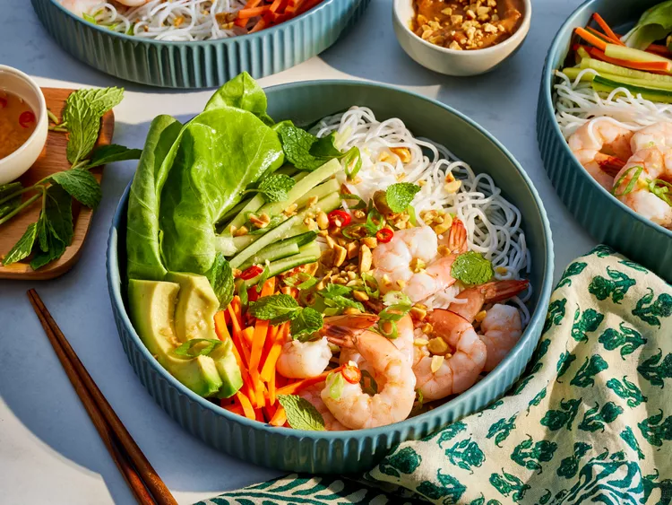

Spring Roll Bowl

Absolutely a beautiful summer dish with many flavors and textures." —Carmela Gonzalez
Ingredients
- 4 ounces vermicelli noodles
- 1 pound large shrimp - peeled, deveined, and cooked
- 1 head butterhead lettuce, torn into bite-sized pieces
- 1 head butterhead lettuce, torn into bite-sized pieces
Steps
- Gather all ingredients.
- Cook vermicelli noodles according to package directions. Run under cold water to cool. Divide noodles among four bowls.
- Add one fourth of the cooked shrimp to each bowl. On the side of the noodles arrange 1 cup of lettuce, 1/4 cup carrots, 1/4 cup cucumber, and 1/4 an avocado to each bowl.
- Top bowls with green onions, mint leaves and peanuts. Serve with peanut sauce and/or Nam Choc.